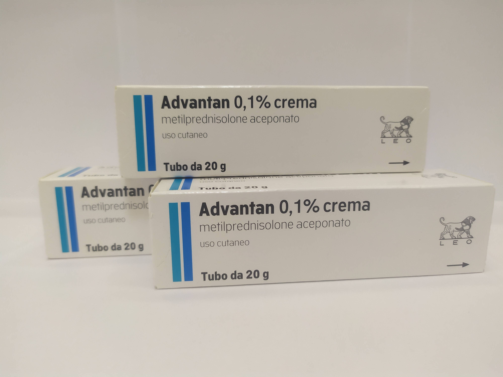

Контактная информация:
Цена: 400 грн/уп.
В наличии
Производитель: Италия
Цена: 400 грн/уп.
В наличии
Именно в FarmItal вы можете купить Адвантан крем 20г, Advantan crema 20g в Украине. Гарантировано качественное лекарство из Италии!
Доставка Advantan crema 20g осуществляется транспортными компаниями, сроки выполнения заказа оговариваются менеджером Фармитал. Вы можете заказать Адвантан крем 20г в городах: Одесса, Херсон, Чернигов, Северодонецк, Бердянск, Бровары, Днепр, Винница, Киев, Славянск, Полтава, Краматорск, Белая Церковь, Каменское, Мариуполь, Черновцы, Александрия, Камь янец-подольский, Львов, Запорожье, Кропивницкий, Житомир, Ивано-Франковск, Сумы, Черкассы, Константиновка, Мелитополь, Кривой Рог, Ровно, Луцк, Никополь, Павлоград, Ужгород, Кременчуг, Лисичанск, Хмельницкий, Тернополь, Харьков, Николаев, а также в других населённых пунктах Украины.
крем белого цвета
1 г крема содержит 1 мг (0,1%) метил преднизолона ацепоната;
другие составляющие: децилолеат, глицерина моностеарат 40-55%, спирткетостеариловый, жир твердый, совтизан 378, полиоксил-40-стеарат, глицерин 85%, натрия эдетат, спирт бензиловый, бутилгидрокситолуол, вода очищенная
Жирная мазь для наружного применения, крем для наружного применения, эмульсия для наружного применения.
Эндогенная экзема, контактный, аллергический дерматиты, дегенеративная, дисгидротическая настоящая экзема, детская экзема с 6-месячного возраста, солнечный дерматит.
Крем Адвантан с низким содержанием жира и высоким содержанием воды подходит для лечения острых воспалительных процессов и мокрой экземы.
Адвантан наносится на пораженные участки кожи 1 раз в день тонким слоем. Продолжительность применения в обычных случаях не должна превышать для взрослых 12 недель, для детей – 4 недели.
В отдельных случаях применение Адвантана может сопровождаться местными реакциями: зуд, жжение, покраснение кожи или появление пузырьков. При длительной терапии кортикостероидами наблюдаются случаи утончения кожи (атрофии), расширения капилляров кожи (телеангиэктазии), стрии или акнеобразные изменения кожи. В результатах проведенных клинических исследований Адвантана,при которых препарат применялся взрослыми до 12 недель, а детьми до 4 недель, таких побочных явлений не установлено. В единичных случаях при лечении Адвантаном могут возникать характерные для локального применения кортикостероидов побочные действия: фолликулит, гипертрихоз, пероральный дерматит, аллергические реакции кожи на один из компонентов препарата.
Адвантан противопоказан при туберкулезе кожи или проявлениях сифилиса на участке, предполагаемом для применения, а также при вирусных инфекциях (ветряная оспа, опоясывающий лишай, реакция на прививку и т.п.), повышенная чувствительность к метил преднизолона ацепоната или любому другому компоненту препарата. /p>
Сохранять крем и эмульсию при температуре не выше 25°С в местах, недоступных для детей.
Срок годности крема – 3 года.